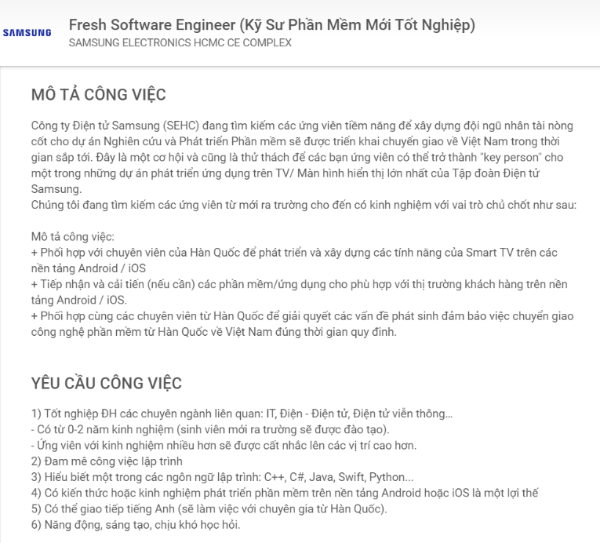
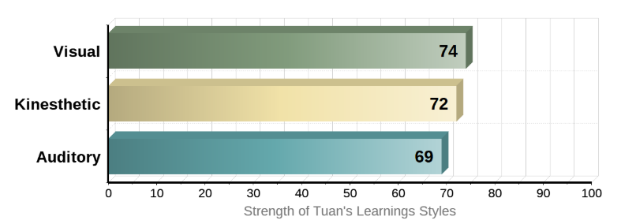
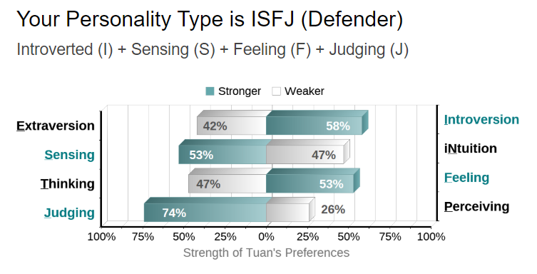
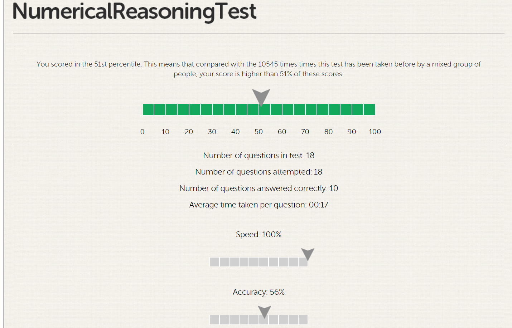

Personal
Information
Hello! First of all, my name is Pham Minh Tuan, my student number is s3817992, you can contact me through my email address s3817992@rmit.edu.vn. I was born on July the 5th , 2001 in Ho Chi Minh City, a financial and economic center of Vietnam. My father and mother both worked in the real estate industry, but before that they had to do a lot of jobs just to earn a decent amount of income to live through the month. Luckily, by a miracle and their hard-working, they received many successes in the industry, and I was fortunate to be raised by them. From kindergarten to high school, I attended at the Vietnam Australia International School (VAS), which provides students with the combination of the Cambridge International and the Vietnamese National education programs, so I could say that I was very well educated. I graduated from VAS with an excellence title and now I am currently studying Bachelor of Information Technology at the Royal Melbourne Institute of Technology (RMIT). One interesting fact about me is that, I used to have a girlfriend, she’s beautiful, very hard-working, a very bad singer but really likes to sing. We broke up for a while now but instead of hating each other, we became the best of friends, a huge turn of events I would say.
When I was in secondary, it was destined by my parents to study business and back then I really had some special interests in studying business as well, just because I could inherited my family’s business and the huge amount of income that you could received each month. However, in high school I took some classes in business and later found out that it was not what I have passionate about. To my surprise, I actually had better score in subjects that relates to IT and since then I have always been fascinated about the application of technology and how some simple coding can direct and control machines in our daily life. As well as AI and deep learning which could benefits our life or turn machine against human and causes our extinction. The person who sparked my interest in IT was not Steve Jobs, Bill Gates or any famous entrepreneur, it was my cousin. He taught me about how technology has been running this world, and how difficult it is for any company that does not implemented technology in their system’s. When people talked about IT, all they think is that IT people are the one who fixes their computers, but that is not true now. IT are much more than that, IT people not only set up or install your computer, they also create the software that helps your computer system to operate smoothly and precisely through a series of coding and debugging. I am still a beginner in programming and much of the experience I have about IT comes from the internet, so I still have a long journey ahead of me. Even if I graduated from university, I still think that what I have learned, was just a scratch on the surface.
I chose RMIT to study Bachelor of Information technology because RMIT allows me to study up to 2 years at Vietnam and in the last year, I could transfer to other universities such as RMIT Melbourne and still received the same program with out any changes of fees. Secondly, RMIT’s certificate are recognized worldwide, with modernized facilities to provide students for their academic success. Finally, RMIT provides career services for students and a wide range of global partnership with international companies that relates to student’s program, and when you are studying, they will provide you with extensive internship to interpreted what you have learned into real life scenario.
Compare to others, I think that my knowledge about IT in general is only sufficient so after the course I would like to expand more of my knowledge about IT such as Artificial Intelligence, computer software, building up computer systems. Moreover, most tech companies nowadays require graduate to have a wide knowledge about programming language such as Java, C++, Python, etc... and as a beginner I hope I would be able to cope up with everything that is taught. And I hope that the school will provide me with some opportunity for an internship during my last stage at university.
click image for link
I choose Samsung because it is a multinational cooperation and well known around the world especially in creating and developing software and hardware. What appeals me about about this position is that unlike other tech companies, which requires extra years of experience, Samsung is willingly to train for new employees, though there are still priorities and higher position for people with more experience too if others want to apply. The requirements for the job are simple, just like other companies, you need to have experience in programming languages such as C++, Java, Python... It’s better for your application if you know all of them, but it’s alright if you choose only 1 to work with. Secondly, for applicants with knowledge on platform like Android or iOS, that is an extremely big advantage for them. Thirdly, you need to be able to communicate in English since you are going to be teamworking with experts from South Korea. The salary for graduates is acceptable and there are chances for promotion if you do well. Lastly, you need to have passion in programming, as well as having a creative mindset and are willing to study hard.
I think I have a fairly decent amount of knowledge about technology but on a scale of 1 to 10, I think the knowledge I have is barely a 4. I am currently a beginner in learning python, so programming still is a very brand-new concept for me. I can speak and write in English fluently so that will not be much of a problem to me.
To achieve the requirements, I think I have a very long journey ahead of me. Firstly, I think I will try my best to attend every single classes at RMIT, as well as participating in activities that relates to IT and make the most out of the classes and the activities that I attended. Secondly, try my best to achieve HD/DI because businesses might rely on the score you have to highlight you from the others. Thirdly, I will master Python because this is the easiest language to learn, after that I will take extra classes to study more languages which is quite popular in the industry like Java, C++ or Swift and get familiar with foundation like iOS and android. Last but not least, I should always have a positive mind and make as much mistakes as possible, cause from that I will learn to improve myself and try better next time much a greater outcome.

Click image for a full details report

Click image for a full details report

Click the image to try out the test
The results of this test helped me to understand myself more, especially on the Myers-Briggs test, which brings out many possibilities as a future career path and define your personality as an introvert or extrovert. The results are the same of how I would review myself in all the 3 tests, specifically on the learning style test where it is pointed out that that I learned by visualizing stuffs and by doing it. I am also quite disappointed in the numerical reasoning test, I feel like I could have done way better if I had more time on each test , 10 out of 18 is better than 51%, barely average so there is more to work on.
As the resulted showed on the Myers-Briggs’s test, I think that I am very good at working with people in a group or in an organization. However, I think that different people may have different results as they taken the test and therefore the outcome is we might have people with many approaches or solutions. This could be good in solving problems or making plans, though this could cost many difficulties as well if everyone can not sync together and get together well. For example, as a visual learner, I work on things that I see which have been done by others and mostly improvising If needed. On the other hand, if the people I worked with are auditory learners, they base on what they hear which is more precise and they followed detailed plans. This might be better for some, but I think that this limited human’s creativity and imagination.
I think that when forming a team, we should always compare our test’s result with each other to have a more understanding of every team member thus to work more efficiently. Getting well together and always have things in common are very important factors that can affect the proficiency and helping things works smoothly. However, it is always better to work with different people even if they do not have much of anything in common like you, from that you can get more experience from people who are better than you.